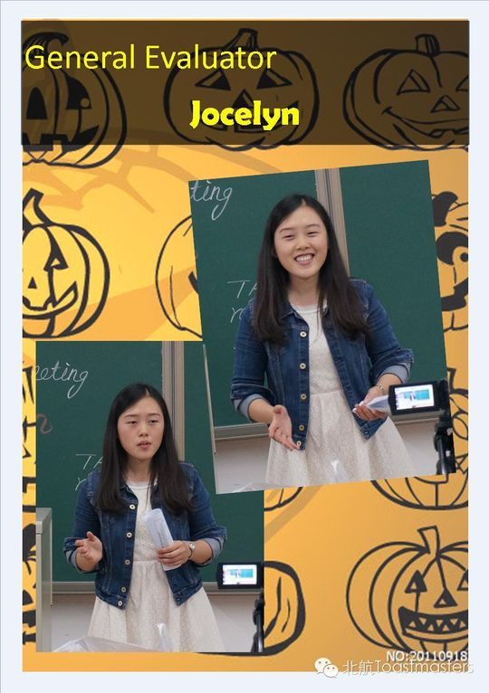

Jocelyn娇姐
从破冰到毕业又重返舞台的"点评女神"，温柔知性、心思细腻，是俱乐部里最会评、最爱书的姐姐。
会员活跃 2014–2016出现 10 次 · 10 篇1 场演讲
Jocelyn（娇姐）是北航Toastmasters早期的老成员之一。早在2014年春天的"Member Growth"成长榜上就已经能看到她的名字，那时她还是一位刚起步、尚未积累太多角色的新人。到了当年6月，她已经能在第63次会议担任总点评官（General Evaluator）、在第65次会议挑大梁主持整场会议（Toastmaster），俨然成长为可以独当一面的骨干。也正是在2014年6月，随着北航的毕业季，她与Amanda、Jason、Shawn一同迎来告别——第64次会议专门为这几位毕业生举办了温暖的欢送会，俱乐部说"再见意味着下次再会"，并为他们多年的付出颁发了特别纪念奖。
让人惊喜的是，她真的"下次再会"了。2016年，Jocelyn重新出现在会议名单里，而且状态更胜从前。她带来了CC3备稿演讲《Judge a book by its cover?》，从一本书的封面谈到以貌取人，分享一位"知性member"对外表与内涵的思考；也曾担任即兴主持（Table Topic Master），把自己"总想花得比赚得多"的小烦恼变成了一场别开生面的TT主题。
但真正让她被人记住的，是她那双"会看戏"的眼睛。在137、138、143次等多场会议上，她一次又一次摘下Best Evaluator（最佳点评官）；在第153次会议上，她又凭《Judge a book by its cover》拿下Best Prepared Speaker。小编们称她的总评"简直了、太赞了"，也爱用"孩子，来，摸摸头，我给你推荐本书"来调侃这位爱书、温柔又有主见的姐姐。前后跨越两年多的旅程里，她从青涩新人成长为受人敬重的点评者，是北航头马"温柔而有力量"的代表之一。
闯关之路 · Competent Communication
CC1
破冰
CC2
组织你的演讲
✓
CC3
明确目标
CC4
怎么说
CC5
肢体在说话
CC6
声音的变化
CC7
研究你的主题
CC8
善用视觉辅助
CC9
以理服人
CC10
激励听众
做过的演讲 · 1 场
CC3Judge a Book by Its Cover?2016-09-23 · 第153次
从选书是否只看封面，谈到初见一个人是否只凭外表评判，思考这是否是个看脸的社会，分享对外表与内涵的看法。
担任过的职责
点评官 Evaluator×4Toastmaster 主持总点评官 General Evaluator即兴主持 TTM
里程碑
- 2014-04-08 出现在成长榜在'Member Growth'成员成长榜上已名列其中，作为起步阶段的新成员（当时角色数为0）。
- 2014-06-13 担任总点评官第63次会议出任General Evaluator，开始承担核心功能角色。
- 2014-06-20 毕业告别第64次会议作为毕业生与Amanda、Jason、Shawn一同接受欢送，俱乐部为其贡献颁发特别纪念奖。
- 2014-06-27 主持整场会议第65次会议担任Toastmaster，成长为可独当一面的骨干。
- 2016-05-17 重返舞台并夺最佳点评2016年回归活跃，在第137次会议获Best Evaluator，开启'点评女神'阶段。
- 2016-09-23 CC3备稿演讲并获最佳第153次会议发表《Judge a Book by Its Cover?》，并当选Best Prepared Speaker。
为俱乐部做的事
- 长期、多次担任点评官，以高质量总评帮助讲者成长，被公认为俱乐部的'点评女神'。
- 2014年作为骨干承担Toastmaster主持与总点评官等核心功能角色，支撑会议运转。
- 2016年回归后继续活跃，担任即兴主持（TTM）并用心设计TT主题、带动现场气氛。
- 以CC系列备稿演讲（如《Judge a Book by Its Cover?》）持续输出有思想性的内容。
- 作为跨越多届的老成员，毕业后仍重返俱乐部，为club延续了传承与情感纽带。
头马里的人
点评过 TA 的
Brenda同台搭档
Channing照片墙 · 时间线
共 10 帧，其中 2 帧已用人脸识别确认是本人（带 ✓）。

✓ ✓
✓


“娇姐：孩子，来，摸摸头，我给你推荐本书，好么？”